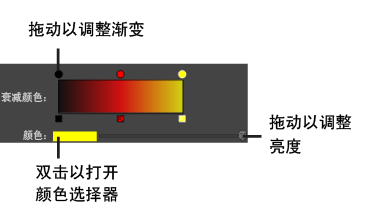

默认情况下，Maya 的“软选择”(Soft Selection)衰减颜色是从黑色依次转变为红色、黄色的渐变颜色。如果默认颜色在网格的纹理或着色器下难以识别，则可以通过“衰减颜色”(Falloff color)渐变更改颜色反馈。
更改“软选择”(Soft Selection)衰减区域的颜色
- 双击任意“工具框”(Tool Box)图标。
- 在系统显示的“工具设置”(Tool Settings)窗口中，启用“软选择”(Soft Selection)部分中的“软选择”(Soft Select)。
- 选择“衰减颜色”(Falloff color)渐变上方的一个圆圈并进行调整。

- （可选）单击渐变以将颜色添加到渐变。
渐变上方将会显示附加的彩色圆圈。
- （可选）单击渐变下面的一个框以从渐变中移除颜色。
提示： 通过禁用“软选择”(Soft Selection)部分中的“视口颜色”(Viewport color)，关闭场景中的渐变颜色。